Protection in an MPLS-Enabled IP-Over-WDM Network > Instructions
Instructions
In the first procedure, Procedure 3-1, you set up an MPLS network with LSPs and define the mapping between the Layer-2/3 network and the Transport network.
Procedure 3-1 Defining the MPLS Label Switched Paths
- Open the SWIM_Tutorial_MPLS_Protection project SP Guru Network Planner.
- Select File > Open.
- Select the project file SWIM_Tutorial_MPLS_Protection. Click Open. Note that the current scenario is called bare.
- Inspect the Layer-2/3 and Transport networks.
- Note that 10 LSPs are defined in SP Guru Network Planner. These LSPs are displayed in different colors in the workspace. The network has been configured to enable MPLS: the OSPF routing protocol is running on all routers, RSVP is running on all interfaces for control messages to set up the LSPs, and MPLS is also enabled on these interfaces.
- Select SWIM > Switch To Corresponding Transport Network to view the transport network topology.
- Select SWIM > Switch To Corresponding Layer-2/3 Network.
- Verify that SWIM > Automatically Update Operational Status Visualization is turned on. This displays overlay icons for Layer-2/3 links if they are mapped onto Transport connections when those connections are not up.
- Define the node mapping to relate the Layer-2/3 network to the underlying Transport network.
- Select SWIM > Node/Link Mapping > Map Nodes....
- Map the Layer-2/3 nodes to their respective namesakes at the Transport Nodes side by selecting a node in the left pane and clicking the >> button.
- Click OK to close the dialog box.
- Import the link mapping from an XML file containing the mapping information.
- Select SWIM > Node/Link Mapping > Map Links....
- Click the Import button.
- Browse for the file SWIM_Tutorial_MPLS_Protection_Mapping_to_Import.xml in the folder
<install_dir>\<release>\models\std\swim\examples directory. Click Open. This results in the successful import of 15 link mappings. Close the SWIM – Import Link Mapping Results dialog box that appears.- Apply the link mapping by choosing OK from the SWIM – Map Links dialog. Note that the operational status of all 1000BaseX links is down since they have now been mapped onto Transport connections that have not been set up yet (they will have an overlay icon).
- Note that the overlay icons are not displayed automatically if SWIM > Automatically Update Operational Status Visualization is off. In that case, you can either turn it on or manually display the icons by selecting Topology > Visualize Operational Status > Visualize.
- Save the project.
End of Procedure 3-1
After setting up the integrated network, you can do the first design. This design maps the IP links to transport network connections, routed without protection in SP Guru Transport Planner. The LSPs are set up using the traffic engineering design action in SP Guru Network Planner. The LSPs are protected by routing them along a link disjoint primary and secondary explicit route (ER) without accounting for any transport layer information.
Procedure 3-2 Dimension with MPLS Protection
- Create the MPLS_protection_link_disjoint scenario.
- Select Scenarios > Duplicate Scenario.
- Name the scenario MPLS_protection_link_disjoint. Click OK. This copies the bare scenario to the MPLS_protection_link_disjoint scenario (in the same project).
- Switch to the Transport network: select SWIM > Switch To Corresponding Transport Network.
- Accommodate the IP links on the transport network in an unprotected way.
- Select Design > Groom DCL to OCH Traffic > Optimized Routes....
- Select the 1Gbps_Eth_Links traffic matrix, choose OC-48 as bit rate for the supporting OCH traffic matrix and select End to End Grooming. Do not select Optimize or 1+1 Protection in DCL. Click Groom.
Figure 3-1 Groom DCL to OCH Traffic Dialog Box
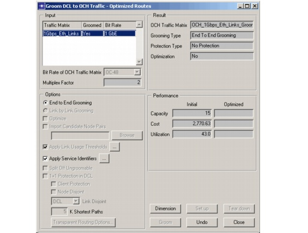
- A new OCH traffic matrix OCH_1Gbps_Eth_Links_Grooming is created as a result of this grooming action. Click Dimension to accommodate this optical traffic matrix in the network.
- The Dimension DCL/OCH Layer dialog box appears. Select the newly created OCH traffic matrix OCH_1Gbps_Eth_Links_Grooming. Select Unprotected (Protection) and keep the default settings for the other options.
Figure 3-2 Dimension DCL/OCH Layer Dialog Box
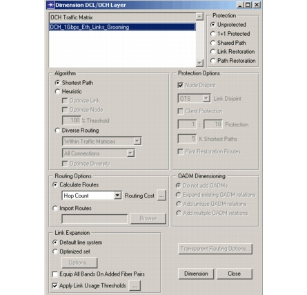
- Click Dimension. The Results of Dimensioning dialog box appears. Note that both the traffic matrices, OCH_1Gbps_Eth_Links_Grooming and 1Gbps_Eth_Links, are now entirely accommodated in the network. This is possible due to the addition of 13 fiber pairs and 76 OXC ports.
- Close all dialog boxes.
- Switch to the Layer-2/3 network.
- Select SWIM > Switch To Corresponding Layer-2/3 Network.
- Note the links no longer have overlay icons—all links are up and running.
- The transport network has been designed to support the IP links and route the LSPs in the IP network on a primary and a secondary route, using the traffic engineering design action.
- Select Design > Configure/Run Design Action....
- Click on the + icon next to Traffic Engineering on the left side of the Configure/Run Design Action dialog box. Select mpls_te.
- Select Current (Target Scenario) in the lower-left corner of the Configure/Run Design Action dialog box.
Figure 3-3 Configure/Run Design Action Dialog Box
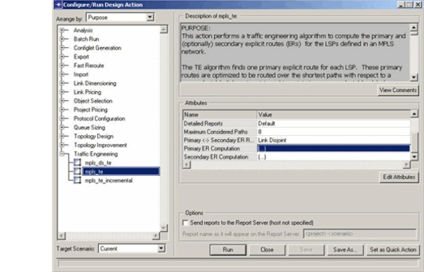
- Click the Edit Attributes... button to specify the details of the design action. The Design Action: mpls_te dialog box appears.
- Select Link Disjoint (Primary <-> Secondary ER Relationship). This ensures that the primary and secondary explicit routes are not using a common IP link.
- Click on the Value field for Primary ER Computation. The (Primary ER Computation) Table dialog box opens. Choose Min Subscribed Bandwidth (Optimization Objective) and click OK. This ensures that the primary paths are routed such that the amount of subscribed bandwidth on the links is minimized.
Figure 3-4 Primary ER Computation Attribute
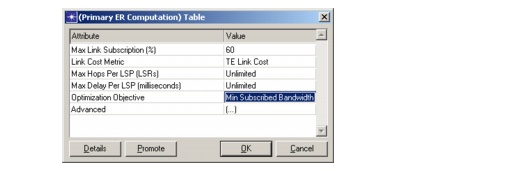
- Repeat the previous step for Secondary ER Computation.
- Click OK in the Design Action: mpls_te dialog box.
- Ensure that the Target Scenario setting at the bottom of the Configure/Run Design Action dialog box is Current and click Run.
- Inspect the results of traffic engineering.
- Click the View Log button in the Action Completed dialog box that appears.
- The Log Browser dialog box opens.
Figure 3-5 Log Browser for MPLS TE Design Action
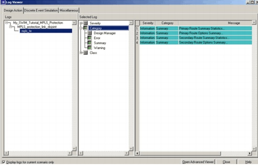
- Select Category > Summary and click Primary Route Summary Statistics (Message column). The Log Entry 2 dialog box opens. Note that all of the LSPs have been successfully routed. The log reports that 1,800 Mb/s out of 30,000 Mb/s have been subscribed.
- Close the Log Entry 2 dialog box.
- Repeat the previous steps for the Secondary Route Summary Statistics. The log shows that both the primary and secondary routes subscribed 2,800 Mb/s out of 30,000 Mb/s. Compared to the total subscribed bandwidth for primary route in 6.3, the additional subscribed bandwidth for secondary route is only 1,000 Mb/s. Because the mpls_te action uses shared path protection to compute secondary routes, these routes can share their subscribed bandwidth whenever their primary routes do not fail at the same time. This is the reason for the low subscribed bandwidth of the secondary routes.
- Close the dialog boxes.
- Inspect the route followed by the LSP from Dublin to Milan.
- Select View > Show Network Browser.
- Select LSPs by Source in the drop-down list.
- Click on the + icon next to the node Dublin. Expand the connection Dublin - Milan.
- Mark both explicit routes.
Both routes are now displayed in the lower part of the dialog box.
- Select the routes by using Ctrl-click.
Figure 3-6 MPLS Paths Between Dublin and Milan
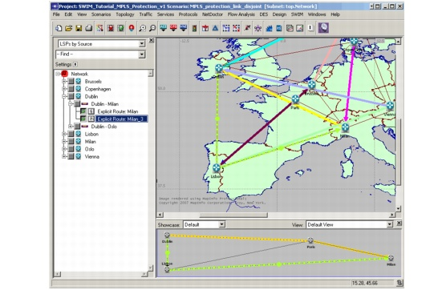
- Select SWIM > Open Connections Browser For Selection... to view the two explicit routes in the SWIM connections browser (do not close the Connections Browser).
Figure 3-7 SWIM Connections Browser
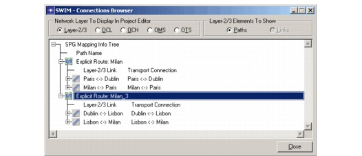
- Select OTS (Network Layer to Display In Project Editor) to visualize the primary and secondary routes on the physical layer. Both primary and secondary routes for the LSP from Dublin to Milan pass through the cable between Dublin and Paris. Therefore, the LSP is lost if that cable breaks. This is because MPLS-TE designed the routes to be IP link disjoint rather than OTS link disjoint.
- Close the SWIM Connections Browser.
- Close the Network Browser.
- Ensure that SWIM > Automatically Update Operational Status Visualization is on.
- Switch to the Transport network: select SWIM > Switch To Corresponding Transport Network.
- Perform failure analysis.
- Select Info > Failure Analysis. The Failure Analysis dialog box appears.
- Click on the OTS button on the toolbar to visualize the OTS layer. Right-click on the link between the nodes Lisbon and Paris. Select Fail This Cable.
- Click Evaluate in the Failure Analysis dialog box. This reveals that 2 wavelengths and 2 STS connections are affected by the cable failure. None are recovered since the network was designed without protection at the DCL and OCH layers.
- Keep the Failure Analysis dialog box open.
- Select SWIM > Switch To Corresponding Layer-2/3 Network. The operational status visualization shows that the IP links Dublin <-> Lisbon and Paris <-> Lisbon are failing due to the cable break.
- Select View > Show Network Browser.
- Select LSPs by Source in the drop-down list.
- Close the Network Browser.
- Return to SP Guru Transport Planner: select SWIM > Switch To Corresponding
Transport Network.- Close the Failure Analysis dialog box to end the failure simulation.
- Switch to the Layer-2/3 network: select SWIM > Switch To Corresponding Layer-2/3 Network.
- Save the project.
- Perform survivability analysis in the Layer-2/3 network.
- Right-click on the router in the Paris node and select Fail This Node.
- Select View > Show Network Browser to inspect the LSPs that are affected and lost by the router failure in node Paris. You will find that the LSPs Brussels -> Lisbon, Dublin -> Milan and Lisbon -> Brussels are all affected by the router failure. None of these are lost, however, because their secondary routes do not cross the Paris node.
- Right-click on the Paris node and select Recover This Node to repair the router failure.
- Close the Network Browser.
End of Procedure 3-2
In Procedure 3-3, you will do another design. The optical layer is designed as it was in the first design, which means that the IP links are mapped to transport network connections without protection. This time, however, the primary and secondary explicit routes of the LSPs are diverse down to the physical layer.
Procedure 3-3 Dimension with MPLS protection and SRGs
- Create the MPLS_protection_SRG_disjoint scenario.
- Create Shared Risk Groups (SRGs) based on a single cable break in the optical Transport network. SRGs express the relationship between Risk Elements (in this case, cable failures) and Impacted Elements (in this case, IP links).
- Select SWIM > Create Shared Risk Groups From Transport Network....
- Select only Cables in the Elements to Fail list and select Single element failures (Element Failure Combination). Click OK. This creates one SRG for every cable on the transport layer. The impacted elements of each SRG represent the IP links that fail as a result of the cable failure.
Figure 3-8 Create Shared Risk Group from Transport Layer Dialog Box
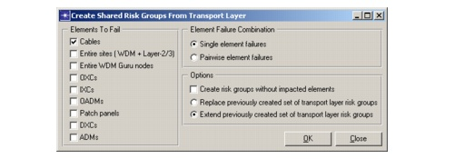
- Inspect the SRGs created in the network browser at the left side of the Project Editor. The SRGs are named Transport Risk Group – Cable X <-> Y, representing a SRG for a cable between nodes X and Y. For instance, there is a risk group for the cable break between Brussels and London—if this cable breaks, the IP links Copenhagen<->Dublin and Dublin<->Brussels will fail.
- Turn off View > Show Network Browser (or click Ctrl+B) to close the network browser.
- Design the LSP routes again. Use the traffic engineering algorithm, taking the SRGs into account to obtain primary and secondary routes at the physical layer.
- Select Design > Configure/Run Design Action....
- Click on the + icon next to Traffic Engineering at the left side of the Configure/Run Design Action dialog box. Select mpls_te.
- Ensure that Current (Target Scenario) is selected in the lower-left corner of the Configure/Run Design Action dialog box.
- Click the Edit Attributes... button. The Design Action: mpls_te dialog box appears. Select SRG Disjoint (Primary <-> Secondary ER Relationship).
- Click on the Value field for Primary ER Computation. The Primary ER Computation dialog box opens. Select Min Subscribed Bandwidth (Optimization Objective) and click OK.
- Repeat the previous step for Secondary ER Computation.
- Click OK in the Design Action: mpls_te dialog box.
- Click Run in the Configure/Run Design Action dialog box.
- Click the View Log button when the Action Completed dialog box appears.
- The Log Browser dialog box opens.
- Select Category > Summary and click on Primary Route Summary Statistics. The Log Entry 2 dialog box appears. Inspect the results and close the dialog box. Do the same for Secondary Route Summary Statistics. The log messages report that primary routes have subscribed 1,800 Mb/s for the LSPs and the secondary 3,700 Mb/s. Note that the value for the secondary route is higher without considering SRGs (see step 7.7 in Procedure 3-2 of this tutorial). This is due to the fact that the secondary routes have to follow longer paths to respect the SRG disjointedness. This is also due to the fact that the chance to share the subscribed bandwidth among secondary routes is also smaller for SRG disjointness.
- Close the dialog boxes.
- Switch to the Transport network: select SWIM > Switch To Corresponding Transport Network.
- Perform failure analysis.
- Select Info > Failure Analysis to start the failure simulation.
- Use the OTS toolbar button to visualize the OTS layer. Right-click on the link between Lisbon and Paris and select Fail This Cable.
- Click Evaluate in the Failure Analysis dialog box.
- Without closing the Failure Analysis dialog box, select SWIM > Switch To Corresponding Layer-2/3 Network.
- Select View > Show Network Browser.
- Select LSPs by Source in the drop-down list to inspect the primary and secondary routes taken by each LSP. You will find that the primary routes of the LSPs between Lisbon and Brussels are affected by the cable break. Both LSPs are recovered because their secondary route remains unaffected.
- Close the Network Browser.
- Switch to the Transport network: select SWIM > Switch To Corresponding Transport Network.
- Save the project.
- Perform failure analysis for a node failure.
- Select Info > Failure Analysis to start the failure simulation.
- Use the OTS toolbar button to view the OTS layer. Right-click on the node Paris and select Fail This Node.
- Click Evaluate in the Failure Analysis dialog box.
- Select SWIM > Switch To Corresponding Layer-2/3 Network (do not close the Failure Analysis dialog box).
- Select View > Show Network Browser to inspect the affected LSPs. None of the LSPs are lost. Note that this is not guaranteed by the MPLS-TE design, since we only based it on SRGs for single cable breaks. (You could design the LSP routes to be resilient to all optical node failures—except LSP end node failures—by first generating SRGs for single node failures and subsequently running the mpls_te design action to find primary and secondary ERs that are SRG disjoint.)
- Switch to the Transport network: select SWIM > Switch To Corresponding Transport Network.
- Close the Failure Analysis dialog box to end the failure simulation.
- Select SWIM > Switch To Corresponding Layer-2/3 Network.
- Close the Connections Browser.
End of Procedure 3-3
A final design investigates the effect of protection at the optical layer (instead of protection at the MPLS layer). To create this effect, the LSPs are routed without protection, but the IP links are protected by mapping them on protected connections at the transport layer. This also ensures protection against all single cable failures.
Procedure 3-4 Dimension with Protection at the Optical OCH Layer
- Create the OCH_protection scenario.
- Select Scenarios > Switch to Scenario > bare to return to the bare scenario.
- Select Scenarios > Duplicate Scenario.
- Name the scenario OCH_protection and click OK.
- Switch to the Transport network: select SWIM > Switch To Corresponding Transport Network.
- Dimension the Transport network with protection at the optical layer.
- Select Design > Groom DCL to OCH Traffic > Optimized Routes....
- Select the 1Gbps_Eth_Links traffic matrix, choose OC-48 as the bit rate for the supporting OCH traffic matrix and select End to End Grooming. Do not select Optimize or 1+1 Protection in DCL. Click Groom.
Figure 3-9 Groom DCL to OCH Traffic Dialog Box
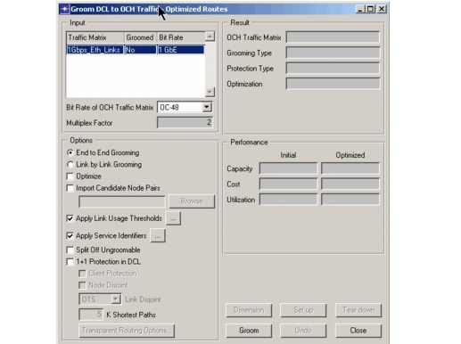
- Click the Dimension button. This opens the Dimension OCH/DCL Layer dialog box, which lets you accommodate the newly created OCH traffic matrix OCH_1Gbps_Eth_Links_Grooming in the network (with protection).
- Select the OCH_1Gbps_Eth_Links_Grooming traffic matrix and 1+1 Protected (Protection). Keep the default settings for the other options. Click Dimension.
Figure 3-10 Dimension DCL/OCH Layer Dialog Box
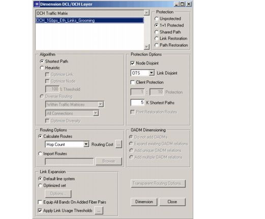
- The traffic matrix OCH_1Gbps_Eth_Links_Grooming is now entirely accommodated in the network using the 1+1 protection scheme. The Dimensioning Results dialog box opens. It reports that 14 fiber pairs and 138 OXC ports have been added to the network. This is more than in previous tasks (see step 5.5 of Procedure 3-2). We have dimensioned the optical layer for the same traffic matrix but additional capacity is now needed to ensure optical protection.
- Close all dialog boxes.
- Switch to the Layer-2/3 network: Select SWIM > Switch To Corresponding Layer-2/3 Network to return to the SP Guru network.
If SWIM > Automatically Update Operational Status Visualization was on, notice that the overlay icons [U] have disappeared because the Transport connections that support mapped SP Guru links are now set up.
- Design the LSP routes again, using the traffic engineering algorithm, this time do not provide protection at the MPLS layer.
- Select Design > Configure/Run Design Action....
- Click on the + icon next to Traffic Engineering at the left side of the Configure/Run Design Action dialog box. Select mpls_te.
- Select Current (Target Scenario) in the lower left corner of the Configure/Run Design Action dialog box.
- Click Edit Attributes.... The Design Action: mpls_te dialog box appears. Select No Secondary ER (Primary <-> Secondary ER Relationship).
- Click on the Value field for Primary ER Computation. The (Primary ER Computation) Table dialog box opens. Select Min Subscribed Bandwidth (Optimization Objective) and click OK.
- Click OK in the Design Action: mpls_te dialog box.
- Ensure that Current is selected as Target. Click Run in the Configure/Run Design Action dialog box.
- Click the View Log button when the Action Completed dialog box appears.
- The Log Browser dialog box opens.
- Select Category > Summary and click Primary Route Summary Statistics. The Log Entry 2 dialog box appears. The results reported in the logs show that only primary routes are set up and that they consume 1,800 Mb/s. Thus, we save bandwidth at the MPLS layer compared to previous designs because no secondary explicit routes were set up.
- Close the dialog boxes.
- Generate a SWIM failure analysis web report to study the effect of optical cable cuts on the SP Guru network.
- From the menu in SP Guru, choose SWIM > Generate Failure Analysis Report For Transport Network Failures...
- In the dialog that appears, ensure that Cables are selected as Elements To Fail, and Single as Element Failure Combination.
Figure 3-11 Generate Failure Analysis Report Dialog Box
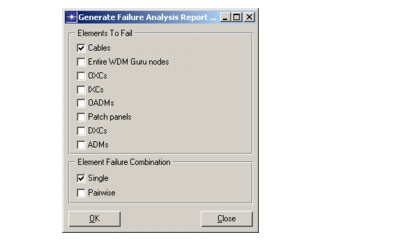
- Click OK in the Generate Failure Analysis Report... dialog box. This opens a web browser for the requested failure analysis report.
- In the Summary Per Transport Layer Failure sheet that opens by default, scroll down to the Transport Layer Failure Cases table. Note that none of the single cable failures causes SP Guru links to go down, since you have provided protection at the optical layer (OCH).
- From the Transport Layer Failure Cases list in the left- hand side frame, select Cable Lisbon <-> Paris.
- The Affected SP Guru Links table shows that a cable cut between Lisbon and Paris results in two SP Guru links to be affected: their delay increases because of a switch over to a longer protection path at the optical OCH layer.
Figure 3-12 SWIM Failure Analysis Rep
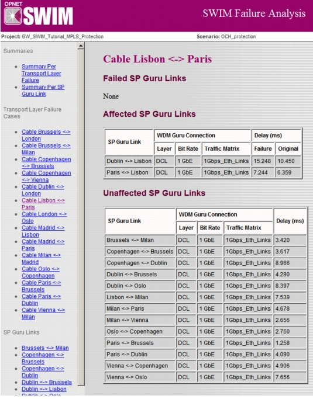
ort- Investigate the effect of a router failure.
- Right-click on the router in node Paris and select Fail This Node.
- Select View > Show Network Browser and select LSPs by Source in the drop-down list to inspect the LSPs that are affected and lost by the router failure in the Paris node. Notice that the LSPs Brussels -> Lisbon, Dublin -> Milan, and Lisbon -> Brussels are lost due to the router failure. There are no secondary routes and the optical layer protection does not protect against IP router failures.
- Close the Network Browser.
- Right-click on the Paris node and select Recover This Node to repair the router failure.
- Investigate the effect of a node failure.
- Select SWIM > Switch To Corresponding Transport Network to return to the Transport network.
- Select Info > Failure Analysis to start the failure simulation.
- Use the OTS button on the toolbar to view the OTS layer. Right-click on the Paris node and select Fail This Node.
- Click Evaluate in the Failure Analysis dialog box.
- Return to SP Guru by selecting SWIM > Switch To Corresponding Layer-2/3 Network (do not close the Failure Analysis dialog box).
- Select View > Show Network Browser and select LSPs by Source in the drop-down list to inspect the affected LSPs. The LSPs Brussels -> Lisbon, Dublin -> Milan, Lisbon -> Brussels are lost. OCH protection does protect against optical node failures unless the node is an end point of an optical connection. In this case, the IP links terminating in the Paris node are mapped to optical connections terminating in the Paris node and they cannot recover from an optical node failure. Note that an optical node failure in London would not result in lost LSPs because no IP links terminate in London.
- Close the Network Browser.
- Select SWIM > Switch To Corresponding Transport Network to return to the Transport network.
- Close the Failure Analysis dialog box to end the failure simulation.
- Close the project.
End of Procedure 3-4
| Home 1987-2007 OPNET Technologies, Inc. All Rights Reserved. This software may be covered by one or more U.S. Patents. See complete patent notice in the Legal Notices section. OPNET Support Center |